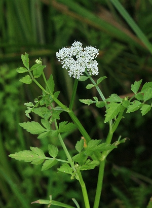

セリ
基本データ
- 日本名：せり（芹）
- 科目 ：セリ科
- 学名 ：Oenanthe stolonifera
| 生息地 | 水田、湿地 | |
| 大きさ | 20～40cm | |
| 花の咲く時期 | 7～8月 | |
| 花の色 | 白色 | |
| 花びらの枚数・形 | 5枚 |
数少ない日本原産の野菜で春の七草で親しまれてあり、独特の強い香りには健胃、食欲増進、解熱といった薬効がある。別名「根白草（めじろくさ）」という。よく似た植物でドクゼリがあり、こちらは食べると名前の通り毒があるため、判断が難しい場合は、採らないこと。

| 生息地 | 水田、湿地 | |
| 大きさ | 20～40cm | |
| 花の咲く時期 | 7～8月 | |
| 花の色 | 白色 | |
| 花びらの枚数・形 | 5枚 |